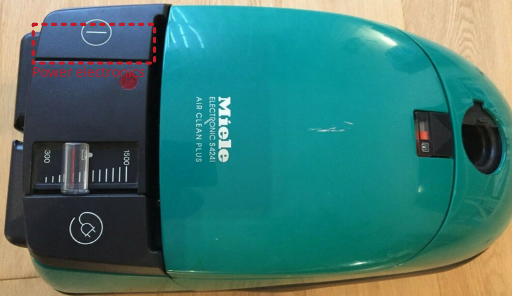

MOSFETs in switched-mode power supplies (SMPS)

In this article, we will take a look at the failure mechanism of MOSFETs. These components are the most important components in modern power electronic converters. In the event of overvoltage, overheating or excessive current, these components fail. In addition, all components come with a certain lifespan.
MOSFETs are very popular as power semiconductors in switching power supplies. They are cheap, easy to use and enable the development of efficient, modern power supplies. They are available in various designs. The design determines the cooling connection. There are various different types of MOSFETs. As N-channel MOSFETs are the most common ones in power electronics, we will focus on this type in this article.
In simple terms, a MOSFET acts as a switch. By applying a voltage between the gate (G) and source (S), the channel between the drain (D) and source becomes conductive. This makes it possible to switch a high current with a control signal. The operating modes of MOSFETs in switching power supplies are limited to the ON and OFF switching states. Intermediate states, as used in audio technology, are not used in power supply units.
The semiconductor manufacturing process always produces an intrinsic diode, also known as a body diode. This diode is antiparallel to the channel. In some power supply topologies, this is essential for the function of the circuit.
MOSFET failures
Most broken MOSFETs can be detected by measuring the antiparallel body-diode by a diode tester (measuring forward voltage by a multimeter). If a forward voltage can be measured, it is a good hint, that the component is fine. The component is defective, if a forward voltage of 0 V is measured.
Also, the resistance between the gate pin G and the source pin S as well as the drain pin D should be measured. It should be in the MOhm range. Note, if you measure in-circuit, due to pull-down resistors (typical in rage 10 kOhm ... 100 kOhm), there will be a different value shown compared to a device what is not in-circuit. In case of a broken MOSFET, the resistance it typically 0 Ohm.
Replacing MOSFETs
If possible, broken MOSFETs should be replaced with the same type. This is where the least can go wrong. If this is not possible, attention should be paid to the following properties:
The blocking voltage of the new MOSFET should be the same as that of the old MOSFET. A higher blocking voltage is not always recommended, as a higher blocking voltage usually also increases the on-state resistance.
The maximum current should be greater than or equal to the old MOSFET
The on-state resistance (R_ds,on) should be less than or equal to that of the old MOSFET. A higher R_ds,on would cause excessive losses in continuous operation, which in return would affect the lifespan of the newly installed component.
The housing and the pinout should be the same.
Attention: When mounting the component on a heat sink, appropriate insulating foils are often installed. These must be reinstalled during the repair, as the cooling fin of the component is usually at a high potential. Insulating separation is absolutely essential here. In most cases, such ‘gap pads’ also provide a good thermal connection to a heat sink.